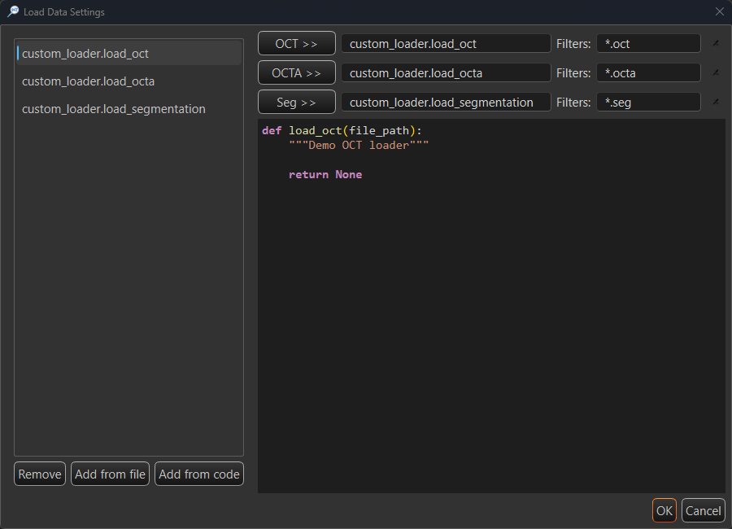
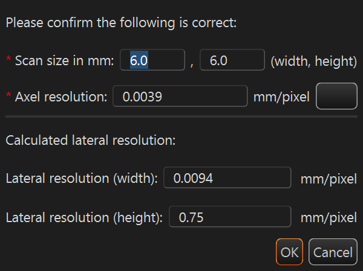
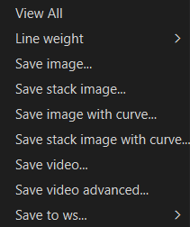
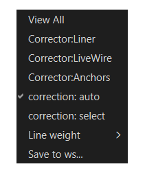

Overview
Retinal Layer Segmentation runs on OCT volume for segmenting retina. It runs a deep-learning model on every B-scan, detects the retinal layer boundaries, reconstructs them into smooth curves, and builds a 3-D view of the layers across the volume. Everything runs locally. Your data never leave the machine.
The extension opens its own window, titled RetinalLayerSegmentation.

What you can do
- Load OCT and OCTA volumes, load any previously saved segmentation.
- Segment the retina with one click, on the GPU if available.
- Review the detected boundaries, show or hide individual layers, and correct any boundary by hand.
- Interpolate the segmentation across sparse B-scans to fill the whole volume.
- Inspect the result as B-scans, en-face projections and a 3-D surface.
- Send the curves and masks back to the MedICS workspace, or save them to files.
Requirements
- MedICS, installed and running.
- GPU is required for accelate AI retinal layer segmentation.
Install
Install the extension from inside MedICS, the Settings-> Extension.
Open the Extension Manager
In MedICS, open Extensions → Manager… from the menu bar.
Find the extension
Scroll the list to Retinal Layer Segmentation.
Install it
Select the extension and click Install, then wait for the download to finish.
Enable it
If it is not already enabled, click Load. The extension then appears under the Extensions menu, and show on the Activity Bar.
First run
Open Retinal Layer Segmentation. Click the icon shown on the Activity Bar.
Quick start
Open the extension
From the Extensions menu or Activity Bar , open Retinal Layer Segmentation. The RetinalLayerSegmentation opens.
Load data
Option 1: On the File tab pick your OCT volume (and optionally OCTA), then click Load Data — or drag files onto the window.
Segment
Click Run AI Segmentation. Adjust ROI to make sure retinal tissue is included inside the ROI. Choose the compute device if you want to run on a different device.
Review & correction
Hide or show layers, and use the corrector to fix any boundary.
Save
Use Save to WS to send results to the MedICS workspace, or Save to write files.
The Retinal Layer Segmentation window
The window has two areas. The left panel holds everything you operate; the right side shows four linked views of the data.

Data source
The top of the left panel loads input data. It has two tabs.


File tab
Choose a file for each input with its folder button, or type the path, then click Load Data to read them together.
| Field | What it loads | Formats |
|---|---|---|
| OCT | The OCT volume (B-scans) | .foct, .oct, .dcm, .mat, .tif/.tiff |
| OCTA | An optional OCTA (angiography) volume, co-registered with the OCT | .ssada, .octa, .dcm, .mat, .tif/.tiff |
| Segment | A previous segmentation (layer curves) | .json, .dcm, .mat, .med |
Array orientation matters. When a .mat file is loaded, its volume must be stored as nframe × nrow × ncol — B-frames along the first axis, rows (depth) second, and A-scans (columns) last. Transpose the array before loading if the axes are in another order, or the frames will be interpreted incorrectly.
- OCTA checkbox — uncheck it to load an OCT-only dataset. Also will hide loaded OCTA data from the Left B-frame Panel
- setting… — opens Load Data Settings, where you can review, assign and manage the loader functions used for each data type.
- Load Data — reads everything selected at once.
Load Data Settings
The setting… button on the File tab opens Load Data Settings. This is where you choose which loader function reads each kind of file. Open it when a file is not recognised, or to teach the extension a custom format.

How to use it:
- Select a loader function in the list on the left — its source appears in the preview below.
- Click OCT >>, OCTA >> or Seg >> to assign the selected function to that input.
- Type the file patterns the loader should handle in its Filters box.
| Element | What it does |
|---|---|
| Loader list | Every loader function found in the custom-loader folder, shown as module.function. Select one to assign it or to preview its code. |
| Remove | Marks the selected function as deleted (a #deleted marker is written into its file) so it is no longer offered. |
| Add from file | Copies a loader .py file into the custom-loader folder and rescans the list. |
| Add from code | Opens a small editor to write or edit a loader function, then saves it to the list. |
| OCT >> | Assigns the selected function as the loader for OCT files. |
| OCTA >> | Assigns the selected function as the loader for OCTA files. |
| Seg >> | Assigns the selected function as the loader for segmentation files. |
| Loader box (read-only) | Shows the function currently assigned to that input. default means the built-in loader is used. |
| Filters | Space-separated file patterns (for example *.mat *.tif). Files matching them are read by this loader. |
| Clear (×) | Clears the assignment and filter for that row, returning the input to the built-in loader. |
| Code preview | Read-only, syntax-highlighted source of the function selected in the list. |
| OK / Cancel | Apply the assignments, or close the dialog without changing them. |
Right-clicking a function in the list offers Delete, which does the same as Remove.
Save to WS tab
Transfer what is currently loaded back into the MedICS workspace under the names shown. Edit a name if you want a different one, then click the >> button in that row.
| Row | Transfers | Default name |
|---|---|---|
| OCT | The loaded OCT volume | oct_data |
| OCTA | The loaded OCTA volume | octa_data |
| Segment | The segmentation (curves/retinal layer boundries) | seg_data |
Drag and drop
Drop supported OCT, OCTA or segmentation files anywhere on the window. Files are matched by their name and routed to the right input automatically; you can also drag a variable out of the MedICS Workspace Variables panel and drop it on the window to load it. This extension also support drop a image sequence (same image type) as OCT / OCTA volume data.
Frame & resolution
| Control | What it does |
|---|---|
| Frame | The B-scan currently shown. Use mouse wheel or use the arrows to move through the volume; every view follows. |
| total | Read-only total number of frames in the loaded volume. |
| Upate data resolution | Opens a helper to set or correct the physical resolution (pixel size, scan width/height/depth) so measurements and the 3-D view are to scale. Useful when combining volumes acquired at different scales. |
Scan Resolution
Upate data resolution opens the Scan Resolution dialog. It converts the physical size of the scan into a per-pixel resolution so that measurements and the 3-D view are to scale.

Enter the two required values and the lateral resolution updates live. Click OK to write the new resolution to the loaded data.
| Element | What it does |
|---|---|
| Scan size in mm (width, height) | The physical width and height of the scan in millimetres. Required. |
| Axel resolution | The axial (depth) resolution in mm/pixel, taken from the OCT device specification. Required. Click the ? button for guidance on finding it. |
| Calculated lateral resolution | Heading for the read-only results below; these are computed from the values above. |
| Lateral resolution (width) | Scan width ÷ image width, in mm/pixel. Read-only. |
| Lateral resolution (height) | Scan height ÷ image height, in mm/pixel. Read-only. |
| OK / Cancel | Apply the new resolution to the data, or close the dialog without changing it. |
The axial resolution cannot be derived from the image — it is fixed by the OCT device. The help button opens a reminder to consult the device specifications.
Region of interest
Restrict processing to a vertical band of each B-scan — this speeds segmentation up and avoids the empty space above and below the retina.
| Control | What it does |
|---|---|
| ROI top / bottom | The first and last row (in pixels) that the segmentation will use. |
| Auto | Estimates the retinal band automatically from the loaded OCT and fills in the values. |
Segmentation controls
These controls drive the AI model and the manual refinement. They sit below the data and preprocessing groups.

Run AI Segmentation
Runs the deep-learning model on every B-scan and fills in the layer boundaries. If a GPU device is available you are asked which one to use; otherwise it runs on the CPU. Progress and any errors are reported in the status bar.
Device
Chooses how the model runs. AUTO picks the best available device; named entries are the GPUs found on the machine; CPU always works. If a GPU fails, the extension falls back to the CPU automatically.
Corrector
Selects the manual editing tool. All correcting happens in the Right B-Frame (the OCT panel). Choose a tool from the Corrector dropdown — None for review only, or one of the three editing tools below.
First decide how the target boundary is chosen:
| Selection mode | How the boundary you edit is chosen |
|---|---|
| correction: auto | The boundary nearest the pointer is edited. |
| correction: select | The layer chosen in the en-face dropdown is always edited, wherever the pointer is. |
The selection mode is set from the Right B-Frame context menu (see B-Frame context menus). The correctors are available in the Fast scan view; in Slow scan view they are hidden.
Liner
Draws a straight segment over the boundary — the quickest way to correct a short span.
- Hover over the boundary to focus it; it thickens while the other boundaries dim.
- Click the left mouse button at the start of the segment, then drag to the end point. A straight line follows the pointer and replaces the curve between the two points. During correction, click left mouse button to reset the start point of the segment.
- Double click left mouse botton to stop and apply correction.
Only the dragged span changes; the rest of the boundary stays as it was.
LiveWire
Traces the strongest image edge between two points — best when the boundary is clearly visible in the image but awkward to draw by hand.
- Hover over the boundary to focus it.
- Click the left mouse button at the start point, then move the pointer along the boundary. The tool keeps computing the lowest-cost path along the image edges and redraws the curve as you move. During correction, click left mouse button to reset the start point.
- Double click left mouse botton to stop and apply correction.
Because it follows image edges, LiveWire can be pulled off-course by speckle or fluid; re-trace a shorter span if that happens.
Anchors
Edits the boundary point by point, by dragging its control points (the small square markers). Use it for precise, local adjustments.
- Hover over the boundary to focus it — its control points appear.
- Move mouse to a control point to select it; the cursor marker snaps to it.
- Hold the left button and drag to move the point. The curve refits through the anchors as you drag.
- While dragging, scroll the mouse wheel up to add the neighbouring points on each side to the selection (they move together), and scroll down to drop them again.
Right-click the panel while Anchors is active for these entries:
| Item | Action |
|---|---|
| addPoint | Adds an anchor at the pointer. Shown when the pointer is near the focused boundary and no point is selected. |
| removePoint | Removes the selected anchor (together with any neighbours added by the wheel). Shown when a point is selected. |

Interpolation
| Control | What it does |
|---|---|
| Interpolation Step | How far apart the segmented key frames are (minimum 2). Used when filling a sparse volume. |
| Interpolation | Turns interpolation on or off. |
| Restart Interplation | Clears the interpolation and recomputes it from the current boundaries. |
Save
Saves the current segmentation to a file (curves and, optionally, the fluid mask). To send the result to the MedICS workspace instead, use the Save to WS tab.
Layer boundaries
The Layer boundaries group lists every boundary the model can detect. Tick a box to show and export that boundary; use the small dropdown next to it to choose how it is drawn (dashed or solid line). Select All toggles every boundary at once.

Only the boundaries that default to On are produced by the AI model. The entries that default to Off — PVD, GCL/IPL, ELM, IZ/RPE and SAT/HAL — are listed for completeness but are not implemented in the auto-segmentation model. Ticking one of them does not detect or create a curve; leave them off unless you plan to draw that boundary by hand with the corrector.
| # | Boundary | Default | Notes |
|---|---|---|---|
| 0 | PVD | Off | Listed for completeness; not produced by the current model. |
| 1 | ILM | On | Inner limiting membrane. |
| 2 | NFL/GCL | On | Nerve fibre layer / ganglion cell layer. |
| 3 | GCL/IPL | Off | Listed for completeness; not produced by the current model. |
| 4 | IPL/INL | On | Inner plexiform / inner nuclear layer. |
| 5 | INL/OPL | On | Inner nuclear / outer plexiform layer. |
| 6 | OPL/ONL | On | Outer plexiform / outer nuclear layer. |
| 7 | ELM | Off | Listed for completeness; not produced by the current model. |
| 8 | EZ | On | Ellipsoid zone. |
| 9 | EZ/IZ | On | Ellipsoid zone / interdigitation zone. |
| 10 | IZ/RPE | Off | Listed for completeness; not produced by the current model. |
| 11 | RPE/BM | On | Retinal pigment epithelium / Bruch's membrane. |
| 12 | SAT/HAL | Off | Listed for completeness; not produced by the current model. |
| 13 | CHOROID | On | Choroid. |
A few boundaries are listed for completeness but are not produced by the current model; enabling them does not add a curve. The remaining boundaries are detected automatically.
The views
The right side is split into four linked views. Moving the frame — or picking a point — keeps them in sync.

| View | Shows |
|---|---|
| Left B-Frame | A single B-scan with all visible layer curves drawn over it. |
| Right B-Frame | The editable B-scan — the corrector tools work here. |
| En-face | A top-down projection. The Layer / OCT / OCTA button cycles the projection, and the neighbouring dropdown picks the slab or layer to project. |
| 3-D | An interactive 3-D surface reconstruction of the layers. Rotate, zoom and pan; clicking the surface jumps the other views to that location. |
View toolbar
Each view has a small toolbar. Hover a button to see what it does.
| Button | Action |
|---|---|
| Hide Curves / Show Curves | Toggle the layer curves over the B-Frame image. |
| Fast / Slow Scan View | Switch the interpretation of the second Left B-Framexis between fast-scan and slow-scan, which changes how the two B-frames and the en-face view relate. |
| Transpose ON / OFF | Swap the horizontal and vertical axes of the image views. |
| Layout | Stack the B-frames or place them side by side. |
| Reset | Reset the camera / zoom of the view. |
| Collapse | Hide the left or right side so a view can fill the window. |
B-Frame context menus
Right-click inside a B-Frame panel to open its context menu. The two panels differ: the Left B-Frame (OCT / OCTA overlay) focuses on display and export, while the Right B-Frame (the editable OCT panel) also offers the corrector tools.


Left B-Frame (OCT / OCTA overlay)
| Item | Action |
|---|---|
| View All | Fits the image back into the panel — resets any pan and zoom. |
| Line weight ▸ | Curve thickness submenu — pick 1 px to 8 px. |
| Save image... | Saves the current frame as an image file. |
| Save stack image... | Saves the whole B-scan stack as an image. |
| Save image with curve... | Saves the current frame with the layer curves drawn on it. |
| Save stack image with curve... | Saves the whole stack with the curves drawn on every frame. |
| Save video... | Exports the stack as a video. |
| Save video advanced... | Opens the advanced video export options. |
| Save to ws... ▸ | Sends the panel's data to the MedICS workspace — choose OCT or OCTA overlay. |
Right B-Frame (OCT)
| Item | Action |
|---|---|
| View All | Fits the image back into the panel — resets any pan and zoom. |
| Corrector:Liner | Turns the Liner corrector on or off. Tick-marked while active. |
| Corrector:LiveWire | Turns the LiveWire corrector on or off. |
| Corrector:Anchors | Turns the Anchors corrector on or off. |
| correction: auto | Automatic correction mode — the corrector snaps to the strongest edge. |
| correction: select | Select-based correction mode — you pick where the correction starts. |
| Line weight ▸ | Curve thickness submenu — pick 1 px to 8 px. |
| Save to ws... | Sends the panel's data to the MedICS workspace. |
The image-export entries (Save image, Save stack, Save video) are available on the Left B-Frame; on the Right B-Frame the menu is dedicated to editing and workspace transfer.
Status bar
The bar along the bottom reports where the pointer is and what the data is.

| Readout | Meaning |
|---|---|
| Pointer position | Where the pointer is in the hovered image, in data coordinates. |
| index | The pixel value under the pointer. |
| Shape | The loaded volume's shape (frames × rows × columns); shows No data loaded before you load anything. |
| Dtype | The volume's data type. |
One-off messages — loading, saving, warnings — also appear here.
Keyboard shortcuts
The window has no menu bar; these are the keys you can use while working.
| Keys | Action |
|---|---|
| ↑ / ↓ | Previous / next B-scan. |
| ← / → | Jump ten frames back / forward in the main window; in the layer view, jump by the current Interpolation Step. |
| Ctrl (hold) | With the pointer over a view in Slow Scan view, moving the pointer scrubs through the volume (see below). |
Mouse & interaction
| Action | Result |
|---|---|
| Move over a B-frame or en-face view | Updates the pointer readouts in the status bar. |
| Ctrl + move in a B-frame (Slow Scan view) | Scrub through the volume: the horizontal position selects the corresponding slice/frame in the other views. |
| Click in the 3-D view | Picks the surface point under the pointer and moves the B-frames and en-face indicator there. |
| Drag in an image view | Pans the image (use the mouse wheel to zoom). |
| Click a boundary in Right B-Frame | Selects that boundary for editing with the chosen corrector. |
| Drag / rotate in the 3-D view | Orbit, zoom and pan the surface. |
| Right-click on the image views | Open the plot's context menu. In MedICS the default entries are disabled, so the views are driven with the toolbar buttons and the mouse (see Menus). |
Menus & context menus
| Menu | Where | Contains |
|---|---|---|
| Extensions menu | In the MedICS main window | Opens the Retinal Layer Segmentation window. |
| B-Frame context menu | Right-click inside a B-Frame panel | Display, export, corrector and workspace actions — see B-Frame context menus. |
| En-face context menu | Right-click over the en-face view | The plot's own menu; MedICS hides its default entries, so it exposes no actions — use the view toolbar instead. |
| Loader context menu | Right-click an entry in Load Data Settings | Delete — marks the loader function as deleted so it is no longer offered. |
The window itself has no menu bar; every action lives on a control in the left panel or on a view toolbar.
Saving & exporting
| Goal | How |
|---|---|
| Use the result in other MedICS tools | Save to WS tab → send oct_data, octa_data and seg_data. |
| Write the segmentation to disk | Save in the control panel. |
| Keep the fluid mask | Tick Keep Fluid volume before saving/recomputing. |
GPU acceleration & troubleshooting
Segmentation is far faster on a supported GPU. It uses an ONNX Runtime model with an optional NVIDIA CUDA provider. GPU acceleration needs the driver, the ONNX Runtime build and the CUDA/cuDNN libraries to match each other.
| Symptom | What to do |
|---|---|
| Log says CUDA is unavailable; runs on CPU | A CPU-only ONNX Runtime is installed. Install onnxruntime-gpu (and remove plain onnxruntime) on Linux/Windows with an NVIDIA GPU. |
Crashes on a Conv node (CUDNN_* errors) | The CUDA stack is loaded but the cuDNN kernels do not support this GPU, or the cuDNN version does not match the ONNX Runtime build. Match the versions, or let it fall back to CPU. |
| Older GPU (e.g. GTX 10-series) | Recent cuDNN builds no longer support pre-Turing cards. The extension falls back to the CPU automatically; for GPU, install an older ONNX Runtime GPU build that still targets your architecture. |
| Want to force CPU | Choose CPU in the device selector. |
| Model missing after install | The model downloads on first use; an offline machine needs it fetched in advance. |
To check the installed build, run python -c "import onnxruntime as ort; print(ort.get_available_providers())" — you want CUDAExecutionProvider listed.
Notes & limitations
- Only boundaries produced by the model are drawn; a few listed boundaries are placeholders.
- Automatic CPU fallback means a too-old GPU still yields a result, just more slowly.
- Sparse volumes must be interpolated to obtain a dense segmentation.
- The segmentation is computed locally; no image data is uploaded.